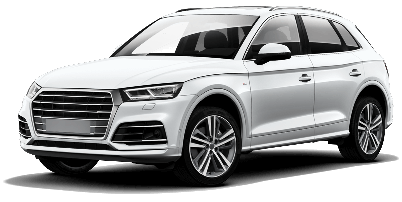

Ремонт автомобилей
В нашем сервисном центре представлен широкий спектр услуг по ремонту автомобилей

Список услуг
Ремонт КПП
Ремонт AКПП
Ремонт стартеров, генераторов
Ремонт тормозной системы
Ремонт рулевого управления
Ремонт ДВС
Ремонт головки блока цилиндров
Установка автомагнитол
Развал-схождение колес
Балансировка колёс
Замена масла
Замена ремня и цепи ГРМ
Замена масляного фильтра
Замена воздушного фильтра
Замена топливного фильтра
Замена тормозной жидкости
Замена свечей зажигания
Замена поршневых колец
Замена радиатора
Замена сцепления
Замена насоса охлаждающей жидкости
Замена масляного насоса
Замена жидкости ГУР
Регулировка клапанов
Кузовной ремонт
Полировка фар, кузова
Покраска кузова
Восстановление геометрии кузова
Предпродажная подготовка авто
Ремонт и реставрация ретро-автомобилей